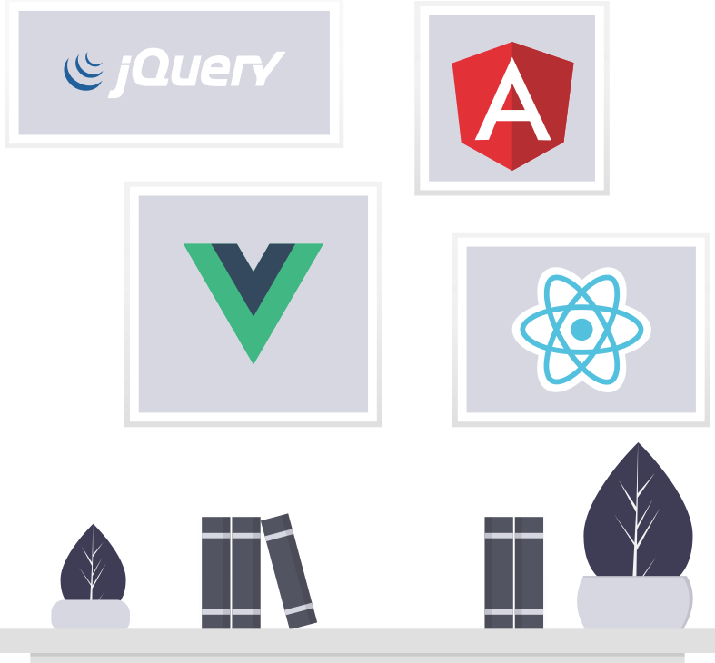
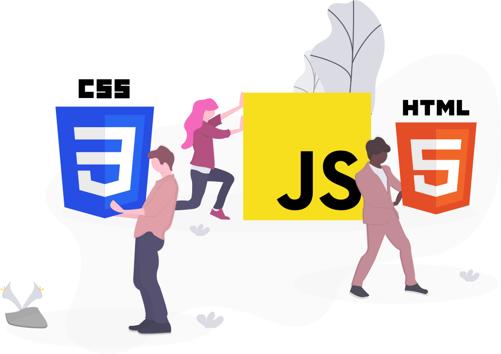
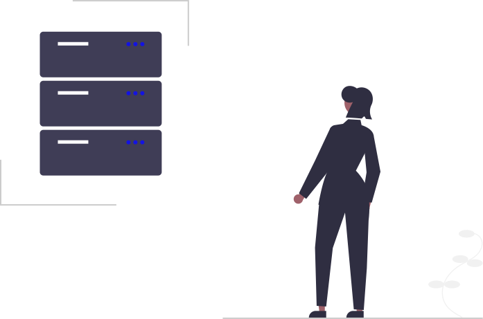

Python en la web
Sin duda python es un lenguaje muy bueno, que es muy utilizado en muchas ramas de la informática, a continuación veremos tips sobre como hacer un uso corecto de algunas cosas que trae python.Python Flask
Flask es un microframework usado en desarrollo web, el echo que sea un microframework no quiere decir que no se pueda hacer proyectos grandes. Pero bueno aqui estamos para unos tips.Si el proyecto va ser pequeño y no tiene caso a ser escalable , puedes usar el típico y facil modelo que se suele usar, pero si va a ser un proyecto que va escalar es necesario hacer uso de los Blueprint que por cierto es solo tener el código de tu proyecto mas ordenado.
para uno que recien va comenzando será un dolor de cabeza pero luego te acostumbraras al dolor.
Python pandas
Pandas es una libreria de python que se usa mucho al trabajar con los datos, pandas hace que la vida de los que manejan datos sea muy facil.Puedes leer archivos .xlsx .csv solo con dos lineas de código.
Python Numpy
Numpy es mi favorita si se trata de trabajar con listas, matrices ya que a comparación de las listas que se puede generar con python mismo, los de numpy ocupan menos espacio en la memoria y tambien se nesecita poca memoria para crear Arrays grandes.Las ventajas que ofrece ante Arrays comunes es que numpy te da mas opciones para manipular sus Arrays
Crear lista
1 import numpy as np
2 listaVacia = np.array([])
3 listaNormal = np.array([1, "a", True])
4 listaEnRango = np.arange(1, 10)
5 listaBidimensional = np.array([1, 2, 3], ["a", "b", "c"])
6 unos = np.ones((3,4))
7 ceros = np.zeros((2,2))
8 aleatorio = np.random.random((2,2))
9 vacio = np.empty((3,2))
10 unSoloValor = np.full((2,3),8)
11 valorEspaciado = np.arange(1,10,2)
12 valorEspaciadoDecimal = np.linspace(0,2,5)
13 matrizIndentidad1 = np.eyes(4,4)
14 matrizIndentidad2 = np.identity(4)
15
16 dimensiones = listaNormal.ndim
17 tipoDeDato = listaNormal.dtype
18 cambioDeForma = listaNormal.reshape(3,2)
19 maximo = listaEnRango.max() # np.max(listaEnRango)
20 minimo = listaEnRango.min() # np.min(listaEnRango)
21 suma = listaEnRango.sum() # np.sum(listaEnRango)
22 tamaño = listaNormal.size
23 forma = listaNormal.shape
24 raizCuadrada = np.sqrt(listaNormal)
25 desviacionEstandar = np.std(listaNormal)
Matplotlib
Matplotlib es una biblioteca para la generación de gráficos a partir de datos contenidos en listas o arrays en el lenguaje de programación Python y su extensión matemática NumPy. Proporciona una API, pylab, diseñada para recordar a la de MATLAB.import matplotlib.pyplot as plt
openCV y Mediapipe
OpenCV es una biblioteca libre de visión artificial que significa Open Computer Vision (Visión Artificial Abierta) que tiene mas de 2500 algoritmos para poder realizar acciones econtrar imágenes similares, seguir los movimientos de los ojos, etc . Practicamente es como tener un ojo en la pc y todo lo que ve podemos manipularlo a nuestro gusto.Mediapipe nos facilita a reconocer y a graficar obejtos que estan siendo captados por la camara, practicamente mediapipe facilita la detección de objetos.

Tips de Javascript
Javascript es un lenguaje muy popular en el área del desarrollo web, ya que es interpretado directamente por el navegador.Existen muchas librerias que estan escritas en Javascript una de ellas es React que personalmente e probado y puedo decir que es muy bueno porque da una apariecia de ser html y js combinado.
Con javascript podemos manejar el DOM de nuestra web entre otras cosas.

React Js
React es una biblioteca Javascript de código abierto diseñada para crear interfaces de usuario con el objetivo de facilitar el desarrollo de aplicaciones en una sola página. Es mantenido por Facebook y la comunidad de software libre. En el proyecto hay más de mil desarrolladores libresSi eres un desarrollador Front nesecitas aprender react.

Tips para Html
El Lenguaje de Marcado de Hipertexto (HTML) es el código que se utiliza para estructurar y desplegar una página web y sus contenidos. Por ejemplo, sus contenidos podrían ser párrafos, una lista con viñetas, o imágenes y tablas de datos.Tips
datalist
datalist es una etiqueta que te ofrece una lista de opciones
Un ejemplo de datalist
datalist es una etiqueta que te ofrece una lista de opciones
Un ejemplo de datalist
Tips para Css
Css en español «Hojas de estilo en cascada», es un lenguaje de diseño gráfico para definir y crear la presentación de un documento estructurado escrito en un lenguaje de marcado
Tips
Aqui veremos partes de css que son muy importantes y muy eficazes la hora de programar, ya que permite ahorrar tiempo.
Variables en css:
Ayudan a reutilizar un valor y por ejemplo si deseas cambiar algo, solo cambias la variable.
Ayudan a reutilizar un valor y por ejemplo si deseas cambiar algo, solo cambias la variable.
:root{
--colorGeneralDeLetra: "black";
}
.miLetra{
color: var(--colorGeneralDeLetra);
}
Librerias Y páginas que uso:
Las librerias o páginas que uso a mi dia a dia son uno de mis herramientas principales al desarrollar mi proyectos, ya que me facilitan mucho y son libianos por lo que no hacen que mi paginas sea dificil de cargar, ademas dan un aspecto mucho mejor.Aqui un listado de ellas:
FontAwesome
Es un sitio web donde econtraremos diferentes tipos de iconos en sus dos versiones que son de pago y gratis.FontAwesome ofrece iconos en formato svg donde puedes descargarlos o simplemente usar la cdn y asi poner los diferentes iconos sin descargarlos
ColorZilla
Un sitio web donde puedes generar colores para tu fondo y modificar los que ya trae, ya sea en gradientes o la clase que te guste.Es muy facil de usar y ya tiene algunos colores predefinidos donde solo puedes copiar y pegar en tu archivo .css
Neumorphism
Aquí puedes generar botones con buenos estilos, con sombras realistas que parecieran que estan flotando sobre la pagina.puedes modificar los colores estilos a como gustes, neumorphis es una herramienta que hará que los botones sin buena apariencia tengan una una apariencia elegante.
unDraw
Si buscas ilustraciones unDraw es el lugar indicado, unDraw ofrece ilustraciones en formato .svg donde puedes descargarlos en los estilos o colores que desees.Solo tienes que buscar la ilustración de su interes y undraw mostrará las ilustraciones disponibles.

Una imagen de unDraw en svg
Browse Fonts
Browse Fonts de google ofrece distintos tipos de letras, para poder tener los estilos en tu sitios web es necesario copiar el link(que se nos genera cuando escogemos el estilo) y pegar en el head de nuestro archivo.htmlPythonanywhere
PythonAnywhere es un entorno de desarrollo integrado (IDE) en línea y un servicio de alojamiento web (Plataforma como servicio) basado en el lenguaje de programación Python.
Rutas
Sin duda si subiste un proyecto python a pythonanywhere te encontraste con errores que no entendias porque pasaban, uno de ellos fue que las imagenes no te cargaban y otras como no te corria el programa.Aqui te explico como subir tu proyecto a pythonanywhere
Si es un proyecto que no utiliza Blueprint, es facil, primero creas un nuevo proyecto en pythonanywhere
creas un entorno aislado con virtualenv o la que uses
Entras dentro de entorno e importar tus archivos y ya.
Recuerda que si en tu app tratas de leer archivos imagenes u otros, siempre usa la ruta absoluta (osea desde /home/..)
Si usa Blueprint recuerda que el modulo a importar tiene que tener el mismo nombre que la variable donde iniciaste Blueprint.
Tambien recordar que los archivos .html en la carpeta templates no lo va leer a menos que crees una carpeta dentro de template y lo muevas ahi tu .html pero deves espesificar que la carpeta es templates cuando inicializas los blueprints
Ya en pythonanywhere deves indicarle cual es tu entorno virtual y cuales son tus archivos estaticos.
Desaventajas
La desventaja que tiene es que da poco espacio, si te instalas un framework aparte como opencv y mediapipe, pws no te instala porque la instalacion se pasa el espacio que te dan.Asi que si tu proyecto tiene dependecias a instalar, resemos para que no se te llene el espacio brindado.
Heroku
Heroku es una plataforma como servicio de computación en la Nube que soporta distintos lenguajes de programación. Heroku es propiedad de Salesforce.comSi bien corre con mucha normalidad proyectos en react, node o javascript puro, pero en lenguajes como python es muy complicado.
Heroku es ideal para cualquier proyecto.